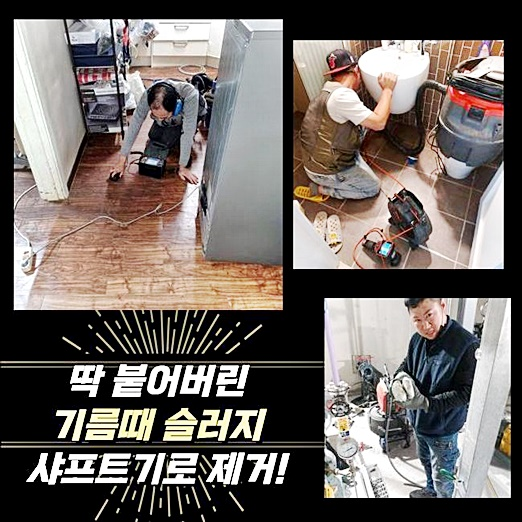
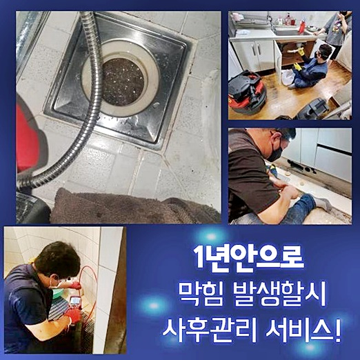
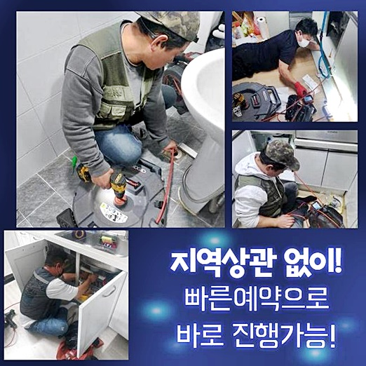
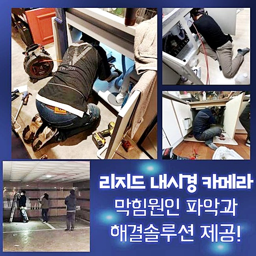
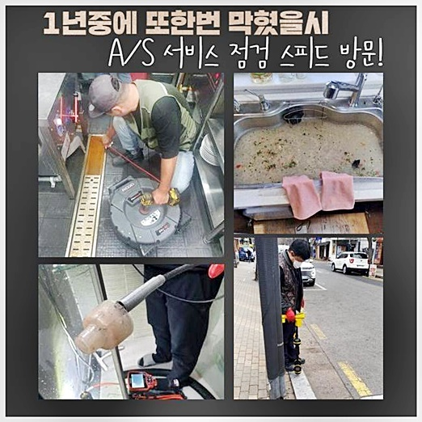
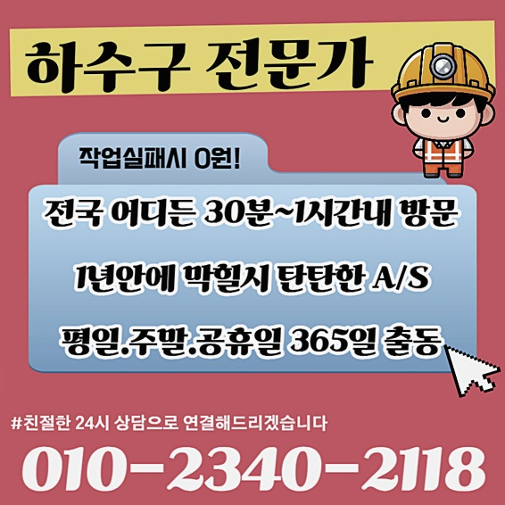

🏠 부평구 산곡동화장실하수구뚫음 구산동 배수구뚫기 누수탐지공사
용인 하수구막힘 전문 시공 후기

📋 작업 개요
- 위치: 용인
- 서비스 유형: 하수구막힘, 배관막힘, 집수정막힘, 누수수리, 역류해결, 뚫는업체, 배관청소, 고압세척, 설비공사
- 작업 일시: 2024. 6. 29. 9:32
- 업체명: 하수구수사대 (010-5615-2118)
🔍 문제 상황
부평구 산곡동화장실하수구뚫음 구산동 배수구뚫기 누수탐지공사
배수구가 막힌다면 당사자분들께서는 어떤시도로 해결해보시려고 할까요
일반적인경우에는 자가적인시도로 뚫고자하시죠
하수도막힘이 발현됐을시 조속한조치로 해결하시는게 좋은방법이죠
해결하지않고 방치한다면 2차적인 피해로인해 역류증세나 누수증상이 이어지게되어 이후에는 해결과정이 어려워질겁니다
누수나역류가 이미발현됐으면 세세한작업이 중요한데요
이곳의경우 배수구가 역류하게되면서 저희들에게 연락을주셨어요
외부관에서 역류가발생된 상황이었어요 내부쪽에서 발현되지않은걸 다행인것이라고 생각해야할지 모르겠지만 바깥쪽에서 역류를보이면 전문적인 장비들이 요구되는데요
그렇기에 여러현장에서 작업을경험한 설비업체를 통하여 해결하셔야해요
고객분이 설명해주신 상태가 심각히들렸으므로 최첨단기계를 구비하여 빠른 내방으로 진행했어요
물이넘치고있던 외부쪽과 여러곳에 자리잡고있는 하수도들을 검사했습니다

🔎 원인 분석
💡 전문가 진단: 정밀 진단 장비를 사용하여 슬러지의 고착 여부를 판명하고 타격/세척 작업을 실시했습니다.
막힘현상을 가장먼저 해결해내야할 외부관을 찾을수있었죠
작업에 임하기전 배수관에 내시경기계를 투입해보니 많은 이물로인해 막힌것으로 살펴볼수있었네요
내시경으로 형체상태를 체크하는것을 명확히하기가 쉽지않았죠 그렇기에 고압청소기를 통하여 배관안쪽을 세척하기로했어요
하수구방향으로 분사하여 시도하기보다는 이물질들의 포커싱하여 세척했더니 석션장비로만은 꺼내기어려운 각종오염물이 빠져나왔어요
바깥쪽에있던 하수구이다보니 나무뿌리같은게 막힘현상을 발현시킨듯 많은양으로 나왔어요
외부하수구는 나무뿌리때문에 사고가일어나기도 하므로 조심해야만해요
하수구청소를 진행해서 이물을꺼내게되면 나뭇가지나 흙같은것들로 보였으므로 더강력한세기로 청소작업을 진행하게되었죠
보통 하수구에서 발견되는 오염물의종류는 슬러지형태입니다
나무뿌리들이나 모래들은 배관내벽에 접착되어있진 않았지만 상당량의 오염물이 들어가게되면서 고착되버린 상황이었답니다
고압세척기로 고착물의 정심부분에 힘을주어 바깥쪽으로 배출시키려고 집중해서 작업했죠
높은수압의 힘을 자랑하고있는 고압장비로 제거해내는데도 안쪽에는 더큰 덩어리들이 위치하고있었는지 확실하게 해결되지못했죠

🔧 작업 과정
확실한 해결을위해서 한번더 내시경을 집어넣어 어떤부분을 공략하는게 좋은것인지 살펴보고자 했습니다
배관입구부분은 오염물질들이 제거된상태라 전과달리 시야가트이면서 오염물의 형태와종류를 확고하게 알아낼수있었어요
흙과뿌리가 뭉친이물을 소거하던중에 살펴봤더니 나무와모래외에도 각종잔여물이 연속해서 나오고있었습니다
처음상황과 다르게 상당량의 오염물질이 제거됐다보니 고객분께서도 체크해보셨어요
외부하수관에서 식물관리나 쓰레기들을 버리게될때 조심해주시는것이 좋다고 말씀드렸습니다
작업에 이어나가던중 집수정안쪽에서 큰이물을 꺼낼수있었죠
개방적으로 사용되는 외부에위치한 하수관이므로 잔해물이 유입되는것이 쉽다고 말씀드릴수있죠
나무와흙덩어리가 하수구모양대로 자리잡고있다가 세척작업으로 제거할수있었죠
끝쪽에는 기름기로인하여 끈적한모습으로 굳어있는부분도 보았는데 내부에있는 하수구쪽에서 각종오염물이 쌓이면서 막아버린것으로 파악할수가 있었습니다
외부관의 넓이자체가 큰편임에도 하수관속을 막히게할만큼 상황이좋지 않았다고 말씀드릴수 있겠습니다
고착물을 없애고나서도 남겨진 잔해물들을 전부제거하여 하수도속을 깨끗하게 만들었어요!
집수정의 깊이가 깊다보니 작업을 진행하는데 오랜시간이 걸렸지만 손상이 일어나지않도록 하수도를 뚫었습니다
물넘침현상이 나타난현장을 작업하게되면 상상할수없는 오염물을 보게되는일이 자주있죠
문제를 발견하자마자 대처하신다면 고압청소기가 없다해도 쉬운방법으로 해결해볼수가 있습니다
배관문제가 쉬울거라고 여기게되서 방치할수있겠지만 그러나 하수도를 사용해야하므로 공사로까지 이어질수있다는점 알고계시는것이 좋겠습니다
가벼운막힘이나 어려운상황에 놓인경우에도 전문인을통해 해결해보시면 신속하고 안전히 뚫을수가있죠
저희들은 작업방식도 현장상태를 체크한후 필요한부분들만 진행해드리므로 단순한막힘으로 상태가 심각하지않을때는 간단히도 해결가능해요


✅ 작업 완료
이번현장처럼 심한상황이라면 첨단기기를 활용해서라도 해결해드리고 있습니다
하수관내부는 두눈으로 체크하는것과 실제내부는 차이가있겠지만 깊은곳도 하수구카메라로 고객분에게도 살피실수있게하여 믿고맡겨주시고 편안히 문의해주세요
상가외에도 가정내에 하수구들도 해결할수있으니 문제가보이는즉시 언제나 연락주셨으면 좋겠어요
1시간안에 어떤장소든 내방이 가능하기까지 하며 분명하게 배관설비 수립계획을 진행하고있어요
시간상관없이 상담가능하오니 연락을주시면 성심성의껏 맞이하도록 할게요!




⚠️ 베란다 누수 및 방수 관리 방법
- ✅ 비가 많이 올 때 창틀 주변이나 아래층 천장에 얼룩이 생기는지 정기적으로 확인해 보세요.
- ✅ 우수관 주변 실리콘 마감이 들뜨거나 깨진 틈새가 있는지 손상 여부를 수시로 체크하세요.
- ✅ 베란다 바닥 타일의 줄눈(메지)이 소실되면 그 틈으로 물이 침투하여 누수가 유발됩니다.
- ✅ 누수 의심 증상 발견 시 방치하면 아래층 손실이 커지므로 즉시 전문가의 진단을 받으십시오.
💡 핵심 정리
- 확실한 장비 작업(내시경 점검 및 샤프트 스케일링)으로 원인을 뿌리 뽑습니다.
- 작업 후 1년 이내에 동일한 부위 재발 시 100% 무상 A/S 서비스를 보장합니다.
- 서울 · 경기 · 인천 전 지역에 24시간 언제든 긴급 출동할 수 있도록 항시 대기 중입니다.
❓ 자주 묻는 질문 (FAQ)
🚨 용인 하수구막힘 문제로 고민이신가요?
정확한 원인 진단과 확실한 시공으로 재발 없는 해결을 약속드립니다.
24시간 긴급 출동 | 서울 · 경기 · 인천 전지역 | 1년 내 재발 시 무상 A/S